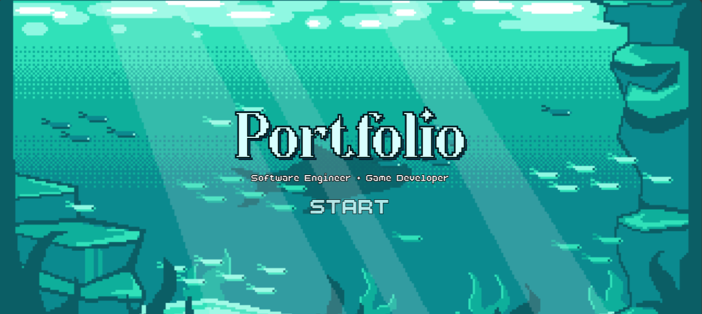
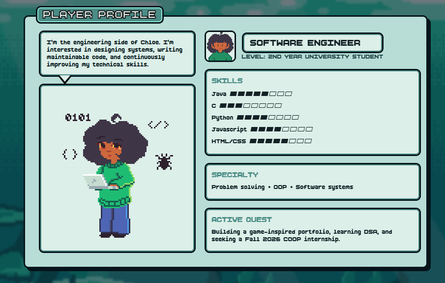
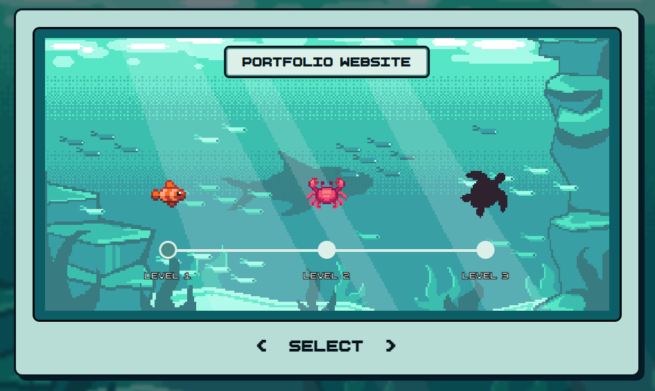

PORTFOLIO WEBSITE
A retro-inspired portfolio built with HTML, CSS and JavaScript.

Overview
This portfolio was created to showcase both my technical interests and my creative side through an interactive experience. I wanted the site itself to communicate my passion for video games by drawing inspiration from pixel-art games for the UI. The website serves as both a personal portfolio and an opportunity to experiment with interface design, front-end development, and pixel art while creating something that reflects who I am!
Project Type : Portfolio
Tools: HTML - CSS - JavaScript - Libresprite
Status: In active development • Last Updated: July 2026
Design & Development
Pixel Art & Visual Theme
One of my main goals was to give the website a recognizable visual identity. I chose a retro pixel-art aesthetic inspired by games I grew up playing, especially Nitrome titles. The underwater setting was selected because it naturally supports a calm, limited colour palette. Restricting the background to a small range of blue and teal shades helped create visual consistency while preventing it from competing with the page content for attention. All decorative assets were done specifically for this project with pixel art.

Character Selection
Instead of introducing myself with a traditional biography, I wanted visitors to choose between two different "player profiles." The Programmer profile focuses on software engineering, problem solving, and technical skills, while the Game Developer profile highlights my interest in interactive experiences, game design, and creative development. This idea was inspired by RPG character selection screens and party member interfaces.

Level Select
Projects are presented as game levels rather than a conventional portfolio gallery. The interface was primarily inspired by the level selection screen from Frost Bite by Nitrome. Each completed project is represented by an aquatic creature that increases in size as the projects become more ambitious. Locked silhouettes indicate future work and reinforce the idea that the portfolio continues to evolve over time.
Interface Design
The interface combines pixel-art aesthetics with standard web navigation so visitors can quickly understand how to move through the site. Decorative elements such as dialogue boxes, player cards, animated sprites, and level menus reinforce the overall theme without interfering with readability. Building the interface also provided valuable experience working with HTML, CSS, and JavaScript together to create dynamic pages that react to user interaction rather than remaining static.
What I Learned
Throughout development I learned how to structure larger front-end projects, separate HTML, CSS, and JavaScript into maintainable components, debug unexpected browser behaviour, and gradually improve interfaces through iteration rather than attempting to perfect them immediately. Working on the site's artwork also showed me how programming and design influence one another. Small visual decisions often required technical solutions, while technical limitations often affected my design choices.
Looking Forward
Although the portfolio is already functional, it is intended to grow alongside my experience. Future updates will include additional completed projects, improved artwork and animations, expanded responsiveness across different screen sizes, and continued refinement of the interface based on feedback and experience.